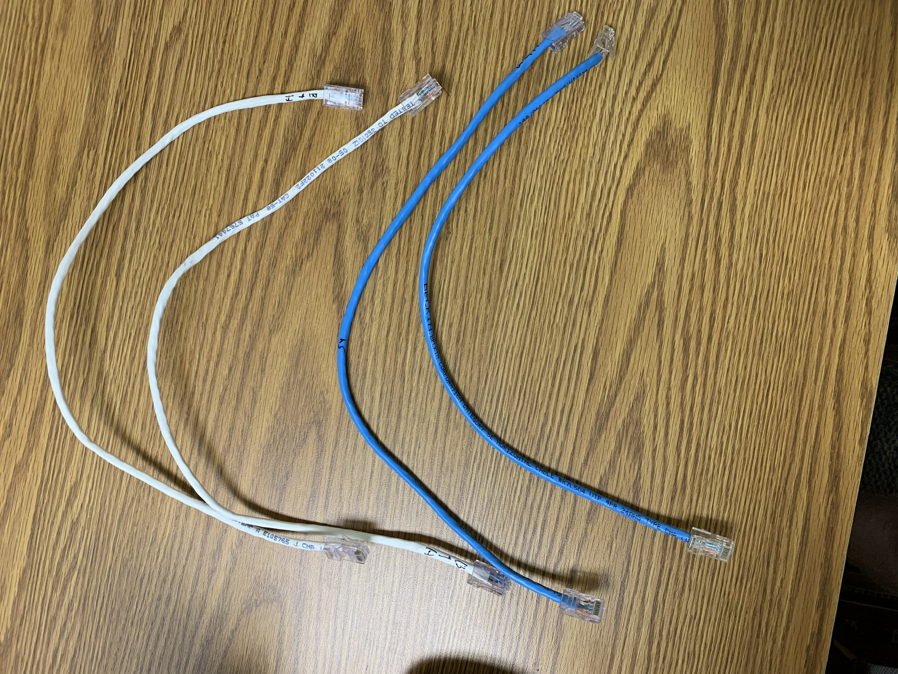

Section 2: Creating Ethernet Cables
TODO: GET PICTURE OF HEADS
- UTP cables are typically used as Ethernet cables and telephone wires.
Each set of wires twisted together form a single circuit. The reason each
curcuit's wires are twisted together to cancel out electromagnetic
interference from external sources.
- 

- Our wire color order: white orange, orange, white green, blue, white blue,
green, white brown, brown
- T-568A Straight-Through Color Code - white green, green, white orange,
blue, white bluie, orange, white brown, brown.
T-568B Straight-Through Color Code - white orange, orange, white green,
blue, white blue, green, white brown, brown.
- To crossover T-568A or T-568B cables, create one head of each type of cable.
One head of the cable would be in the T-568A configuarion while the second
head would be in the T-568B configuation.
-
| Cable |
Type |
Bandwidth |
Data Rate |
| UTP |
Category 5e |
100 MHz |
1 Gbps |
| STP |
Category 7 |
600 MHz |
10 Gbps |
| Crossover |
Category 5e |
100 MHz |
1 Gbps |
- UTP cables are different than other network cables in that they are unshielded,
meaning that each wire does not have a protective shield around it. UTP cables
can transfer at a rate of 1 Gbps just like STP cables and are part of the Local
Area Network. Fiber optic cables are a part of long distance communication and
have a data rate of 10 Gbps which is a lot faster.
{kind=link}